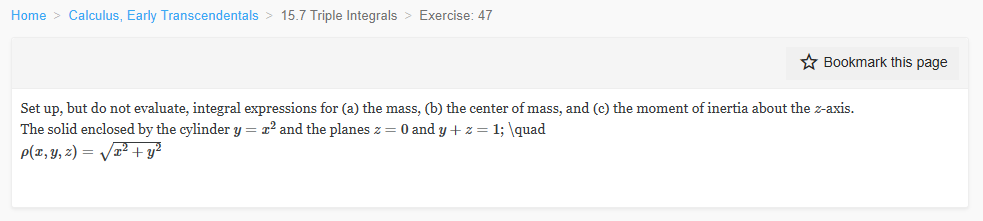

Please solve the problem in the following image.
(Image `20260928_150038_818919_utc_0800_0.png`. Alt text: Image: human_20260928_150038_818919_utc_0800)

20260928_150038_818919_utc_0800_0.png
End of problem
Answer
## 1. Geometry of the solid
The solid is bounded by the parabolic cylinder
$$
y=x^2
$$
and the two planes
$$
z=0,\qquad y+z=1 \iff z=1-y.
$$
The plane $z=0$ intersects the cylinder along the parabola $y=x^2$ in the $xy$-plane. The plane $y+z=1$ intersects the cylinder along the curve $y=x^2,\ z=1-x^2$. The two planes intersect along the line $y=1,\ z=0$.
Therefore the projection (shadow) of the solid on the $xy$-plane is the region between the parabola and the line:
$$
R=\{(x,y):-1\le x\le1,\ x^2\le y\le1\}
=\{(x,y):0\le y\le1,\ -\sqrt y\le x\le\sqrt y\}.
$$
For each $(x,y)\in R$, the vertical coordinate runs from the lower plane to the upper plane:
$$
0\le z\le1-y.
$$
Thus the solid is
$$
S=\{(x,y,z):-1\le x\le1,\ x^2\le y\le1,\ 0\le z\le1-y\}.
$$
The density is $\rho(x,y,z)=\sqrt{x^2+y^2}$, the distance to the $z$-axis.
---
### Visualizing the solid
The first figure shows the parabolic cylinder $y=x^2$, the plane $z=1-y$, and the plane $z=0$. The second figure shows the projection $R$ onto the $xy$-plane; the dashed segment represents the interval $x^2\le y\le1$ at a fixed $x$. The third figure shows the cross-section at $x=0$, which is the triangle $0\le y\le1,\ 0\le z\le1-y$.
---
pgfplots_2.png
---
## 2. Mass
The mass is the triple integral of the density:
$$
M=\iiint_S \rho(x,y,z)\,dV
=\int_{-1}^{1}\int_{x^2}^{1}\int_0^{1-y}\sqrt{x^2+y^2}\,dz\,dy\,dx.
$$
Equivalently, using the other description of $R$,
$$
M=\int_{0}^{1}\int_{-\sqrt y}^{\sqrt y}\int_0^{1-y}\sqrt{x^2+y^2}\,dz\,dx\,dy.
$$
---
## 3. Center of mass
The coordinates of the center of mass are
$$
\bar x=\frac{1}{M}\iiint_S x\rho\,dV,\qquad
\bar y=\frac{1}{M}\iiint_S y\rho\,dV,\qquad
\bar z=\frac{1}{M}\iiint_S z\rho\,dV.
$$
By symmetry, $\bar x=0$: the region is symmetric about the plane $x=0$, and the integrand $x\sqrt{x^2+y^2}$ is odd in $x$ while the limits in $x$ are symmetric. Hence
$$
\bar x=\frac{1}{M}\int_{-1}^{1}\int_{x^2}^{1}\int_0^{1-y}x\sqrt{x^2+y^2}\,dz\,dy\,dx=0.
$$
The other two coordinates are
$$
\bar y=\frac{1}{M}\int_{-1}^{1}\int_{x^2}^{1}\int_0^{1-y}y\sqrt{x^2+y^2}\,dz\,dy\,dx,
$$
$$
\bar z=\frac{1}{M}\int_{-1}^{1}\int_{x^2}^{1}\int_0^{1-y}z\sqrt{x^2+y^2}\,dz\,dy\,dx.
$$
Since $\int_0^{1-y}dz=1-y$ and $\int_0^{1-y}z\,dz=\frac12(1-y)^2$, these may also be written as
$$
\bar y=\frac{1}{M}\int_{-1}^{1}\int_{x^2}^{1}y(1-y)\sqrt{x^2+y^2}\,dy\,dx,
$$
$$
\bar z=\frac{1}{2M}\int_{-1}^{1}\int_{x^2}^{1}(1-y)^2\sqrt{x^2+y^2}\,dy\,dx.
$$
Thus the center of mass is $(\bar x,\bar y,\bar z)=\left(0,\bar y,\bar z\right)$ with the expressions above.
---
## 4. Moment of inertia about the $z$-axis
The squared distance from a point $(x,y,z)$ to the $z$-axis is $x^2+y^2$. Therefore
$$
I_z=\iiint_S (x^2+y^2)\rho(x,y,z)\,dV
=\int_{-1}^{1}\int_{x^2}^{1}\int_0^{1-y}(x^2+y^2)^{3/2}\,dz\,dy\,dx.
$$
After integrating in $z$,
$$
I_z=\int_{-1}^{1}\int_{x^2}^{1}(1-y)(x^2+y^2)^{3/2}\,dy\,dx.
$$
---
## Final answers (set up, not evaluated)
$$
\boxed{
\begin{aligned}
M&=\int_{-1}^{1}\int_{x^2}^{1}\int_0^{1-y}\sqrt{x^2+y^2}\,dz\,dy\,dx,\\
(\bar x,\bar y,\bar z)&=\left(0,\
\frac{1}{M}\int_{-1}^{1}\int_{x^2}^{1}\int_0^{1-y}y\sqrt{x^2+y^2}\,dz\,dy\,dx,\
\frac{1}{M}\int_{-1}^{1}\int_{x^2}^{1}\int_0^{1-y}z\sqrt{x^2+y^2}\,dz\,dy\,dx\right),\\
I_z&=\int_{-1}^{1}\int_{x^2}^{1}\int_0^{1-y}(x^2+y^2)^{3/2}\,dz\,dy\,dx.
\end{aligned}}
$$
All integrals may equivalently be written with the order $dz\,dx\,dy$ using $0\le y\le1$ and $-\sqrt y\le x\le\sqrt y$.